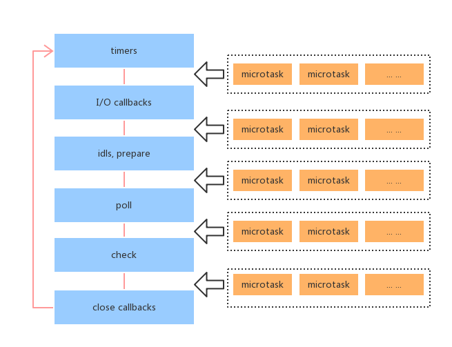
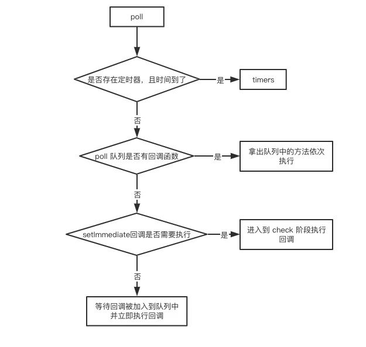

Node 的事件循环机制
前言
Node 中也有宏任务和微任务，与浏览中的事件循环类似。Node 与浏览器事件循环不同，其中有多个宏任务队列，而浏览器是只一个宏任务队列。
Node 的架构底层是有 libuv，它是 Node 自身的动力来源之一，通过它可以去调用一些底层操作，Node 中的 Event Loop 功能就是在 libuv 中封装实现的。
内容
- 宏任务和微任务
- 事件循环机制的六个阶段
- 阶段概述
- 轮循顺序
- Event Loop 过程
- setTimeout 和 setImmediate
- process.nextTick
- node 版本差异说明
- node 和浏览器 eventLoop 的主要区别
一、宏任务和微任务
宏任务大概包括：
- setTimeout
- setInterval
- setImmediate
- script（整体代码）
- I/O 操作等。
微任务大概包括：
- process.nextTick(与普通微任务有区别，在微任务队列执行之前执行)
- new Promise().then(回调)等。
二、事件循环机制的六个阶段

图中的每个框被称为事件循环机制的一个阶段，每个阶段都有一个 FIFO 队列来执行回调。虽然每个阶段都是特殊的，但通常情况下，当事件循环进入给定的阶段时，它将执行特定于该阶段的任何操作，然后执行该阶段队列中的回调，直到队列用尽或最大回调数已执行。当该队列已用尽或达到回调限制，事件循环将移动到下一个阶段。
从上面这个简化图中，我们可以分析出 node 的事件循环的阶段顺序为：
输入数据阶段(incoming data)—>轮询阶段(poll)—>检查阶段(check)—>关闭事件回调阶段(close callback)—>定时器检测阶段(timers)—>I/O 事件回调阶段(I/O callbacks)—>闲置阶段(idle,prepare)—>轮询阶段
三、阶段概述
- 定时器检测阶段(timers)：本阶段执行 timer 的回调，即 setTimeout、setInterval 里面的回调函数。
- I/O 事件回调阶段(timers)：执行延迟到下一个循环迭代 I/O 回调，即上一 lwc 循环中未被执行的一些 I/O 回调。
- 闲置阶段(timers)：仅系统内部使用。
- 轮询阶段(timers)：检索新的 I/O 事件；执行与 I/O 相关的回调（几乎所有情况下，除了关闭的回调函数，那些由计时器和 setImmediate()调度的之外）。其余情况 node 将在适当的时候在此阻塞。
- 检查阶段(timers)：setImmediate()回调函数在这里执行
- 关闭事件回调阶段(timers)：一些关闭的回调函数，如：socket.on('close',...)。
日常开发中的绝大部分异步任务都是在 poll、check、timers 这 3 个阶段处理的，所以我们来重点看看。
3.1 timers
timers 阶段会执行 setTimeout 和 setInterval 回调，并且是由 poll 阶段控制的。同样，在 Node 中定时器指定的时间也不是准确时间，只能是尽快执行。
3.2 poll
poll 是一个至关重要的阶段，poll 阶段的执行逻辑流程图如下：

如果当前已经存在定时器，而且有定时器到时间了，拿出来执行，eventLoop 将回到timers阶段。
如果没有定时器，会去盾回调函数队列。
- 如果 poll 队列不为空
- 如果 poll 队列为空时，会有两件事发生
- 如果有 setImmediate 回调需要执行，poll 阶段会停止并且进入到 check 阶段执行回调
- 如果没有 setImmediate 回调需要执行，会等待回调被加入到队列中并立即执行回调，这里同样会有个超时时间设置防止一直等待下去，一段时间后自动进入 check 阶段。
3.3 check
check 阶段。这是一个比较简单的阶段，直接执行 setImmdiate 的回调。
四、轮循顺序
执行的轮循顺序——每个阶段都要等对应的宏任务队列执行完毕才会进入到下一个阶段的宏任务队列
- timers
- I/O callbacks
- poll
- setImmediate
- close events
每两个阶段之间执行微任务队列
五、Event Loop 过程
- 执行全局的 script 同步代码
- 执行微任务队列，先执行所有 NextTick 队列中的所有任务，再执行其他
- 开始执行宏任务
- 每个阶段的宏任务执行完毕之后
- TimersQueue—>步骤 2
六、setTimeout 和 setImmediate
setImmediate()方法用于把一些需要长时间运行的操作放在一个回调函数里，并在浏览器完成其他操作（如事件和显示更新）后立即运行回调函数。从定义来看就是为了防止一些耗时长的操作阻塞后面的操作，这也是为什么 check 阶段运行顺序排的比较后。
七、process.nextTick
process.nextTick 是一个独立于 eventLoop 的任务队列。
在每一个 eventLoop 阶段完成后会去检查 nextTick 队列，如果里面有任务，会让这部分任务优先于微任务执行。
看一个例子：
setImmediate(()=>{
console.log('timeout1')
Promise.resolve().then(()=>console.log('promise resolve'))
process.nextTick(()=>console.log('next tick1'))
});
setImmediate(()=>{
console.log('timeout2')
process.nextTick(()=>console.log('next tick2'))
})
setImmediate(()=>console.log('timeout3'))
setImmediate(()=>console.log('timeout4'))
2
3
4
5
6
7
8
9
10
11
- 在 node11 之前，因为每一个 eventLoop 阶段完成后会去检查 nextTick 队列，如果里面有任务，会让这部分任务优先于微任务执行，因此上述代码是先进入 check 阶段，执行所有 setImmediate，完成之后执行 nextTick 队列，最后执行微任务队列，因此输出为
timeou1=>timeout2=>timeout3=>timeout4=>next tick1=>next tick2=>promise resolve - 在 node11 之后，process.nextTick 是微任务的一种，因此上述代码是先进入 check 阶段，执行一个 setImmediate 宏任务，然后执行其微任务队列，再执行下一个宏任务及其微任务，因此输出为
timeout1=>next tick1=>promise resolve=>timeout2=>next tick2=>timeout3=>timeout4
八、node 版本差异说明
这里主要说明的是 node11 前后的差异，因为 node11 之后一些特性已经向浏览器看齐了，总的变化一句话来说就是，如果是 node11 版本一旦执行一个阶段里的一个宏任务(setTimeout,setInterval 和 setImmediate)就立刻执行对应的微任务队列。
- timers 阶段的执行时机变化
setTimeout(()=>{
console.log('time1')
Promise.resolve().then(function(){
console.log('promise1')
})
},0)
setTimeout(()=>{
console.log('time2')
Promise.resolve().then(function(){
console.log('promise2')
})
},0)
2
3
4
5
6
7
8
9
10
11
12
- 如果是 node11 版本一旦执行一个阶段里的一个宏任务(setTimeout,setInterval 和 setImmediate)就立刻执行微任务队列，这就跟浏览器端运行一致，最后的结果为
timer1=>promsie1=>timer2=>promise2 - 如果是 node10 及其之前版本要看第一个定时器执行完，第二个定时器是否在完成队列中
- 如果是第二个定时器还未在完成队列中，最后的结果为
time1=>promise1=>time2=>promise2 - 如果是第二个定时器已经在完成队列中，则最后的结果为
timer1=>timer2=>promise1=>promise2
- 如果是第二个定时器还未在完成队列中，最后的结果为
- check 阶段的执行时机变化
setImmediate(()=>console.log('immediate1'));
setImmediate(()=>{
console.log('immediate2')
Promise.resolve().then(()=>console.log('promise resolve'))
})
setImmediate(()=>console.log('immediate3'));
setImmediate(()=>console.log('immedidate4'));
2
3
4
5
6
7
- 如果是 node11 后的版本，会输出
immediate1=>immediate2=>promise resolve=>immediate3=>immediate4 - 如果是 node11 前的版本，会输出
immediate1=>immediate2=>immediate3=>immediate4=>promise resolve
- nextTick 队列的执行时机变化
setImmediate(()=>console.log('timeout1'))
setImmediate(()=>{
console.log('timeout2')
process.nextTick(()=>console.log('next tick'))
})
setImmediate(()=>console.log('timeout3'))
setImmediate(()=>console.log('timeout4'))
2
3
4
5
6
7
- 如果是 node11 后的版本，会输出
timeout1=>timeout2=>next tick=>timeout3=>timeout4 - 如果是 node11 前的版本，会输出
timeout1=>timeout2=>timeout3=>timeou4=>next tick
结论：如果是 node11 版本一旦执行一个阶段里的一个宏任务(setTimeout,setInterval 和 setImmediate)就立刻执行对应的微任务队列。
九、node 和浏览器 eventLoop 的主要区别
- 浏览器端的 Event Loop 和 Node.js 中的 Event Loop 是不同的，实现机制也不一样
- Node.js 可以理解成有 4 个宏任务队列和 2 个微任务队列，但是执行宏任务时有 6 个阶段
- Node.js 中限制性全局 script 代码，执行完同步代码，先从微任务队列 NextTick Queue 中取出所有任务放入调用栈执行，再从其他微任务队列中取出所有任务放入调用栈中执行，然后开始宏任务的 6 个阶段，每个阶段都将其宏任务队列中的所有任务都取出来执行(浏览器是只取第一个执行)，每个宏任务阶段执行完毕之后开始执行微任务，再开始执行下一阶段宏任务，以此构成事件循环。
参考资料
联系作者
平凡世界，贵在坚持。